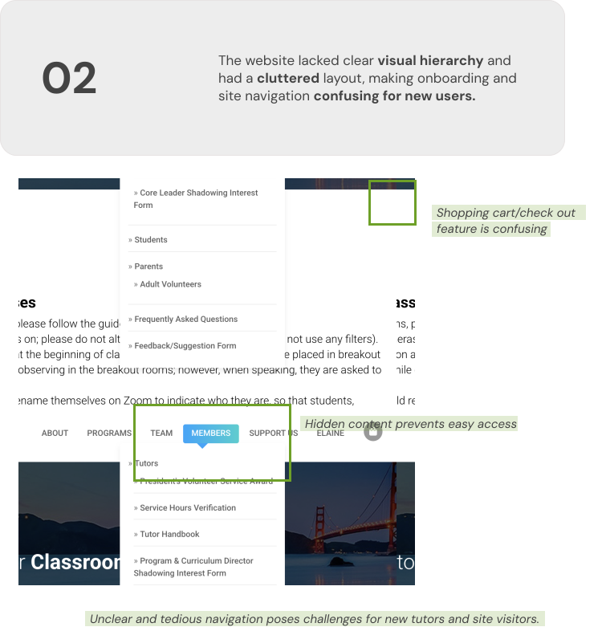

Build Our Bridge Academy


Overview
Build Our Bridge Academy is a non-profit organization dedicated to offering free tutoring in English, Math, Science, Coding, Music, and Art to underprivileged students from countries around the world.
I volunteered as a tutor for the organization throughout high school, and after hearing from current student leaders that the website was confusing to navigate and difficult to maintain, I partnered with two former volunteers to redesign and develop a new site for the organization. Our goal was to improve the user experience for students and tutors by creating intuitive navigation, streamlining time-keeping and messaging features, and ensuring the site is scalable and easy to maintain.
Role
UX Designer and Full Stack Developer
Tools & Methodology
User Research, Figma, Wireframing, User Flow Mapping, Low-Fi/Hi-Fi Prototyping, HTML/CSS/Javascript
Timeline
Jun 2024—Ongoing
What did we build?
Our team consolidated website information, redesigned sign-up and login features for improved usability, and created distinct dashboards for users and students. We are currently in the development stage of the project, using React, Vite, and Django to implement the website.
PROBLEM
The current website is difficult to maintain and confusing to use.
Though functional, updating the website frequently posed a challenge because it was completely maintained by a parent volunteer.
Any changes or additions to the site had to go through them and often took weeks or months to be implemented.

To understand their experience using the website and identify the biggest pain points, we sent out a survey to current students and tutors in the organization.
USER RESEARCH INSIGHTS
Users were confused by unnecessary information.
What is the most frustrating/difficult-to-use aspect of the website?
- “Navigating through the features and unnecessary functions within the account.”
- “It seems like there is a lot of extraneous information on the tutor dashboard, like pricing and sales (?).”
- “I would prefer if we don’t have to specify a start time for every class because it’s always the same, and it gets pretty confusing when I’m in a different time zone.”

SOLUTION IDEATION
How might we simplify the website's navigation and encourage communication between students and tutors?

LO-FI WIREFRAMES
Combining pages with similar information to streamline navigation.
We aimed to help visitors discover the information they were looking for in as few clicks as possible, condensing pages while preserving the organization of the current website. We also wanted to draw more attention to the Sign Up/Log In buttons, making it clear to new users where to begin.

Website redesign: low-fi wireframes
DESIGN SOLUTION
Final Website Pages: Before and After

DEVELOPMENT & LAUNCH
We are currently in the development stage of the project.
Prototypes and development progress! Stay tuned for more!
Back to Home